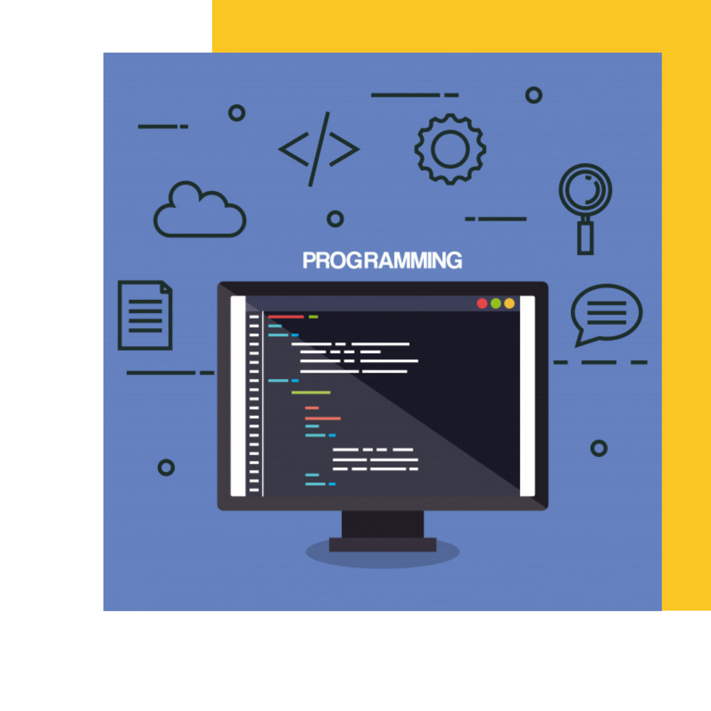

From Level Zero
We wonder how you can start in a programming line and what institutions help us grow from a zero level. But do we have to study a career compulsorily? if we think of university careers we are talking about 4 to 5 years of investment (seen in the best of scenarios).
Could it be less time?
The answer is yes! If we can study for up to a year to start as programmers, whether you are a man or a woman, the opportunities to learn are more and more.
Where to start?There are ways and means of how to start studying programming, the first and the one that we all think at the beginning is to enter a university and do a career, but that takes a long time and if you are looking for fast and safe alternatives that do not take years and that you start from scratch, those would be the ones I mention below:
All these study models teach you that programming is not only learned at university, that you don't need to dedicate years to be a good programming professional, and that the university style is not the only one that can teach and draw professionals. |
 | ||||||||||||